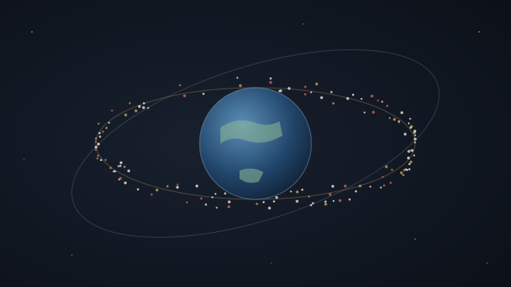
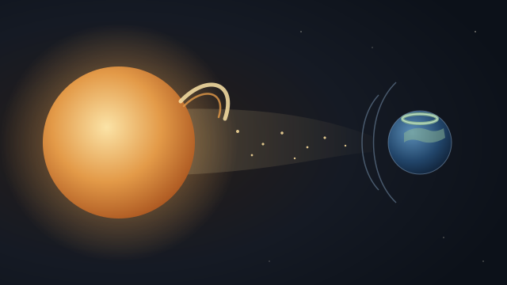
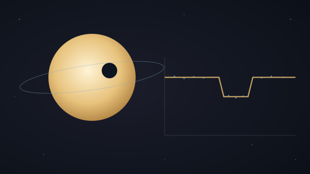
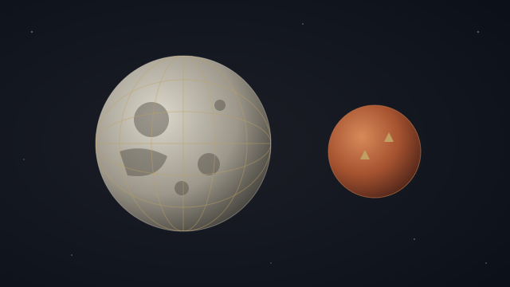

Orbit & Space Watch
What is around the Earth, what the Sun is doing, the planets of other stars, and maps of the Moon and Mars, each from the agencies' own data.
Four ways to look
All four are live, each with its own pages.

Satellites and space junk
A globe with the working satellites and the big debris clouds around the Earth, and every tracked object by height; a collision simulator that shows how one crash becomes a cloud of debris; and the ways the junk could be cleaned up.

The Sun right now
The Sun's latest pictures, the week's flares and eruptions, storms on their way and when they arrive, and your chance of seeing the aurora where you are.

Planets around other stars
How each method of finding them works, with real measurements: the dip in a star's light, the wobble in its colour, the flash of a microlensing event. Then every confirmed planet, by size, orbit and distance, and which are in the habitable zone.

The Moon and Mars
Maps made from orbit, from the whole world down to single craters, with height, names, every landing site and the rovers’ routes.
Elsewhere on the site
The spacecraft map
Every active mission with a public position, from the space station to the Voyagers.
Sky Finder
Find the space stations and the asteroids passing tonight in your own sky.
The solar system map
All the known near-Earth asteroids with the planets and spacecraft, on any date.
Data courtesy of NASA and ESA (the European Space Agency); satellite orbits from CelesTrak (Orbit Watch) and space weather from NOAA (Space Weather).